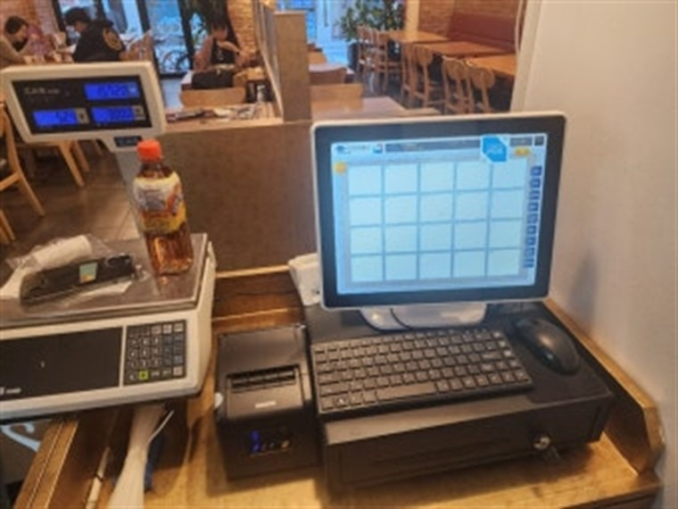

2026.08.27 · 광양
광양 포스기 설치 완료 — 중마동·광양읍 상권 매장 통합 관리

오늘은 광양 중마동의 한 매장에 포스기와 카드단말기를 설치했습니다. 결제가 몰리는 시간에도 끊기지 않도록 포스와 카드단말기, 영수증 프린터, 저울을 하나로 연동해 세팅했습니다.
H포스는 매장 환경에 맞춰 유선 카드단말기, 무선 카드단말기, 블루투스 카드단말기, 카드결제기, 포스기(POS)를 골라 설치합니다. 고정 카운터에는 유선, 홀 서빙·포장 픽업에는 무선·휴대 단말기를 추천합니다.
광양 매장 상권과 결제 환경
광양은 중마동 신도심 상권과 광양읍, 광양제철소 배후 상권이 함께 있습니다. 직장인·가족 단위 결제가 많아 안정적인 포스 환경이 중요합니다. 신규 창업 매장은 가맹 신청부터, 기존 매장은 단말기 교체와 모든 카드사 일괄 가맹까지 한 번에 처리합니다. 개인사업자·법인사업자 모두 진행되고 세금계산서도 발행됩니다.
광양 포스기·카드단말기가 필요한 업종
음식점·불고기·카페·편의점·정육점·미용실·학원·병원·매화마을 관광상가까지 결제가 발생하는 광양 모든 업종에 업종별 맞춤으로 설치합니다.
광양 서비스 지역 (읍면동 방문)
중마동, 광양읍, 골약동, 광영동, 태인동, 옥곡면, 진상면, 다압면, 봉강면까지 광양 전역을 읍면동 단위로 방문 설치합니다.
중마동 포스기 · 광양읍 카드단말기 · 광영동 포스기 등
광양 카드단말기, 다른 이름으로도 찾으시나요?
광양 포스단말기, 광양 카드기, 광양 카드체크기, 광양 카드결제기, 광양 신용카드단말기, 광양 신용카드결제기, 광양 사업자단말기 — 모두 같은 결제 단말기입니다. 광양 포스기 렌탈·카드단말기 임대로도 시작할 수 있고, 설치비 무료·평균 4일 이내 방문합니다.
📞 광양 카드단말기·포스기 설치 상담 010-6832-1994